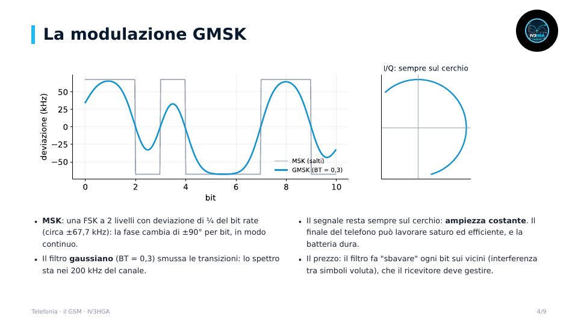
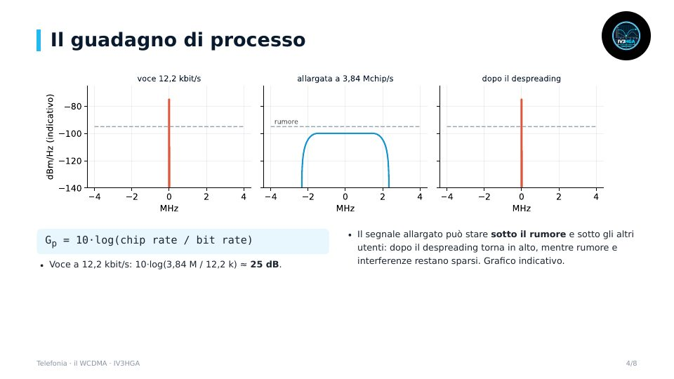

Capitolo 10 · Modulo 1
La telefonia cellulare: il GSM
- Celle e riuso delle frequenze
- 8 slot per portante e modulazione GMSK
- Il burst e la training sequence
- Dalla voce ai bit, equalizzatore di Viterbi, timing advance
Come funzionano davvero GSM e WCDMA: modulazioni, trame, codici, equalizzatori, RAKE e controllo di potenza.

